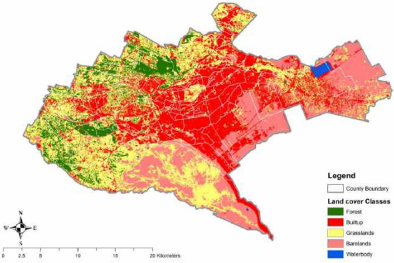
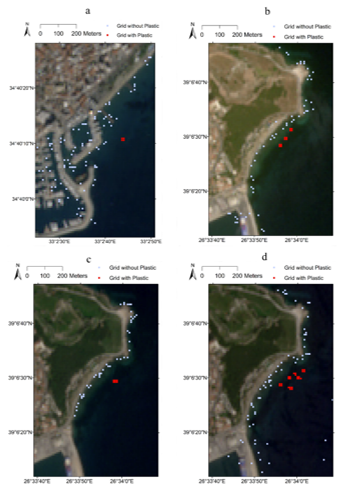

6 Week 6 - Classification I
6.1 Summary
This week’s lecture covered classification in remote sensing and how machine learning can be used to implement this. This summary provides an overview of the lecture, classification, and the types of machine learning which were covered.
How is classified data used?
Classification refers to categorising the pixels in imagery in order to label them such as with land cover use
There are different ways in which classification is carried out e.g. classification of urban green spaces
Other uses of it include monitoring forests and illegal logging which includes pre-processing the data and carrying out resampling, DN to TOA conversion, quality assessment and normalisation, creating metrics, training data and adopting a decision tree approach - legal and illegal areas of deforestation can be identified
How is it classified? How can we extract land cover from EO data?
Experts system = require human knowledge - how can a computer replicate this?
Machine learning - classification and regression trees (CART)
Classification trees = classify data into 2+ categories
Regression trees = predict continuous dependent variables - subset the data into smaller chunks
Classification and regression trees (CART)
Option with the lowest impurity goes to the top of the tree and becomes the root (Gini impurity)
Regression trees - where should the breaks in data be? - we can impose a minimum number of observations before splitting the data again using the sum of squared residuals
A leaf with just one pixel may cause overfitting of data and poor performance of the model on unseen data
Overfitting can be counteracted by establishing a minimun number of pixels in a leaf
Weakest link pruning can also be used as a bottom-up approach
Random Forests
Many classification decision trees
Decision trees created from a random number of variables and a random subset
Bootstrapping = re-sampling by replacement data. The data not included in this (out of the bag, OOB) is tested and the tree with the most votes wins
Image classification
Supervised = classifier learns patterns to place labels onto new data
Unsupervised = identify classes which are not previously known, computer clustering (k-means) and labelling
Maximum likelihood = decision rule classifier, assigns the most probable land cover type and can use a threshold - prior probability information is required
Support Vector Machine (SVM) = linear binary classifier, maximum margin between two classes with the support vectors being points on the boundaries, uses validation to understand levels of misclassifications, hard or soft margins can be implemented
Considerations - do we want to classify pixels or objects? Which machine learning model is best to use? Which hyperparameters are necessary to implement?
6.2 Applications
Image classification is widely used in remote sensing, and is used in other softwares such as in QGIS! The below image was created using a machine learning model in QGIS.
Image classification is also be used in military applications, however one limitation is that there is not necessarily a lot of labelled data available (Li, et al., 2017). In future however, this will undoubtedly increase and more labelled datasets will become widely available.
A novel application of image classification was to detect floating plastic in coastal waterbodies, which used two supervised and two unsupervised models (including SVR and fuzzy c-means) (Basu, et al., 2021). The SVR produced an accuracy of over 95%.
This research can help to provide algorithms to implement policies to protect the environment and to target resources to the most affected areas.

There are really exciting applications of classifying remote sensing data which can help to contribute towards policy to achieve the SDGs and improve both environmental and social issues.
6.3 Reflection
I found this lecture interesting to understand how machine learning can be used to classify remote sensing data. I had only come across machine learning for more tabular datasets such as with house price prediction, so it was interesting to learn about how it is applied to different data sources. I must admit that I do not find the details of the process behind machine learning that interesting, but I do appreciate that it is important to be able to understand data applications in more depth, and it has encouraged me to look more into the science behind different machine learning algorithms and how to choose which algorithm is used. This lecture reminded me of a news story I saw which I didn’t realise at the time was an example of machine learning for image classification - in France the government used remote sensing imagery to classify/identify pools in people’s gardens and cross-compared this with a list of who was paying tax for their pool in order to identify who wasn’t paying their tax or who didn’t have their pool registered with the tax office!
6.4 References
Basu, B., Sannigrahu, S., et al. (2021) ‘Development of Novel Classification Algorithms for Detection of Floating Plastic Debris in Coastal Waterbodies Using Multispectral Sentinel-2 Remote Sensing Imagery’, Remote Sensing, 13, 8
Li, Y., Zhang, H., et al. (2017) ‘Deep learning for remote sensing image classification: A survey’, WIREs Data Mining and Knowledge Discovery, 8, 6
MAPSCAPING (2022) ‘Machine Learning in QGIS for Satellite Image Classification’, available at: https://mapscaping.com/machine-learning-in-qgis-for-satellite-image-classification/ (accessed: 16.3.23)
Seyam, M., Hague, R. and Rahman, M. (2023) ‘Identifying the land use land cover (LULC) changes using remote sensing and GIS approach: A case study at Bhaluka in Mymensingh, Bangladesh’, Environmental Engineering, 7